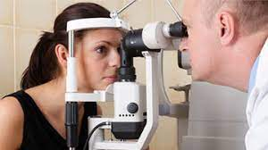

Usluge
Pravovremeno otkrivanje problema i redovna kontrola stanja oka su ključni faktori za održavanje zdravlja Vaših očiju.
Raspolažemo najsavremenijim aparatima oftalmološke tehnologije u koje se možete pouzdati.
KOD NAS MOŽETE OBAVITI SLEDEĆE PREGLEDE:
- Kompletan oftalmološki pregled
- Kompjutersko utvrđivanje dioptrije za naočare i kontaktna sočiva
- Pregled očnog dna
- Merenje intraokularnog pritiska (nekontaktnom i/ili aplanacionom metodom)
- Dnevnu krivu očnog pritiska
- Pregled za decu (određivanje dioptrije u cikloplegiji)
